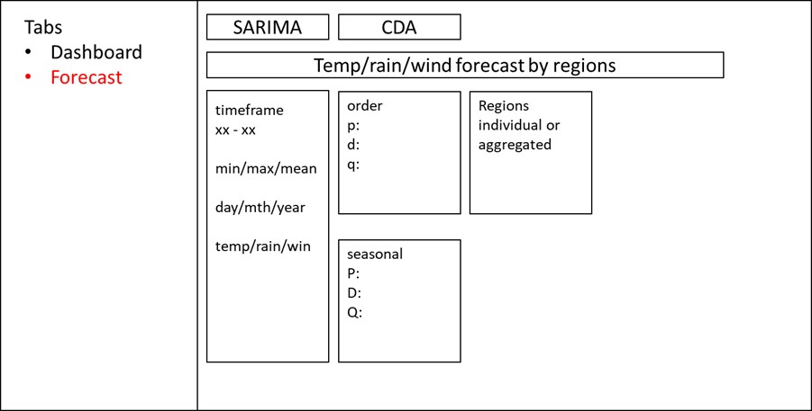
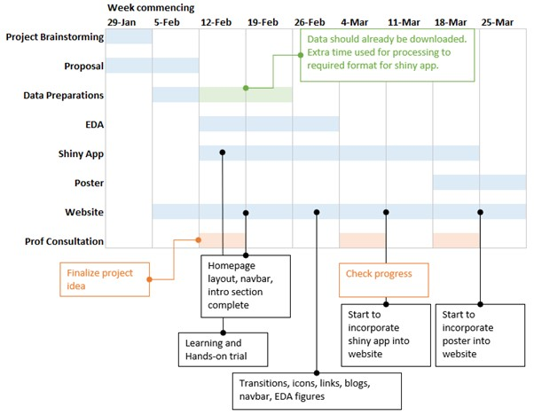

Project Proposal

Motivation
Singapore, known for its dynamic economy and tropical climate, faces unique challenges that significantly impact various aspects of life, infrastructure, and economy. Given the strategic location and vulnerability to weather-induced events such as heavy rainfall, intense heatwaves, and sea level rise, understanding historical weather patterns is crucial for effective planning, risk management, and resilience enhancement.
Problems
The project is to leverage the visualization techniques and advanced analytics to visualize and analyse the historical weather data in Singapore. By focusing on the climate trends and patterns, we aim to address several key problems:
Enhancing weather forecasting accuracy
Accurate weather forecasts are critical for various sectors, such as transportation, construction, and tourism. Incorporating local factors (e.g. geographical data), historical data can be used to develop predictive models for improving the accuracy of weather forecasting, including prediction of short-term weather fluctuation, extreme weather events, and seasonal climate variations with reliability.
Understanding local climate trends
By analysing historical weather data, we can gain insights into long-term climate trends in Singapore, including changes in temperature, rainfall patterns, and humidity levels. Understanding these trends is crucial for assessing the impacts of climate change and developing effective adaptation strategies to address climate change impacts.
Data
The dataset that we are going to use for this project is the historical weather data downloaded from Meteorological Service Singapore. The data covers 4 aspects, which are:
Rainfall
Temperature
Relative Humidity
Wind
In addition, previous research showed that weather has a correlation with the outbreak of dengue fever infection, especially rainfall and temperature (2022. Yawen. W., Yucheng, W., etc. ). We could also make use of the visualizations to study the strength of association between weather changes and dengue cases in Singapore. The data of weekly dengue cases by cluster can be downloaded from SGCharts: Outbreak website. The dataset consists of several columns as follows:
Date of data
Location (cluster)
Longitude
Latitude
Cases with onset in last 2 weeks
Cases since start of cluster
Methodology
Exploratory Data Analysis (EDA)
As a standard procedure of a data analytics project, EDA will be performed to understand the trend and patterns in the data before developing our forecast models.
Understanding the weather time series data (rainfall, temperature, relative humidity and wind) by decomposing them to study their trend, seasonality and stationarity.
Geographical analysis to study the differences of weather by region and planning area in Singapore.
Correlation analysis to study the association among rainfall, temperature, relative humidity and wind.
Correlation analysis to study the association among rainfall, temperature and dengue cases.
Forecast Model Development
Different time series forecast models will be attempted to compare their performance, which are:
Simple moving average method which is a part of the simple time series forecast model family. It will act as the reference model to be compared with more advanced models.
Holt Winter’s method which employs exponential smoothing techniques that applies a higher weightage to the more recent data. The underlying assumption here is that the weather in the recent years would be more valuable in forecasting the future weather.
Seasonal auto regressive integrated moving average (SARIMA) which extends auto regressive integrated moving average (ARIMA) methods by adding the seasonality component. The underlying assumption here is that weather exhibits seasonality trend. Thus, SARIMA method would be more suitable for weather forecasting.
Confirmatory Data Analysis (CDA)
To evaluate the models’ performance and identify the champion model after developing the above-mentioned models, we’ll use the following two commonly used performance metrics:
Root mean squared error (RMSE) which is the square root of mean squared error (MSE). It measures how far the forecasted values are deviated from the actual measurements.

Mean absolute percentage error (MAPE) which measures the percentage error against the actual measurements. It’s largely adopted because it’s normalized in percentage form, which many people find it easier to interpret and compare among different methods.

ShinyApp layout
The app will have 2 main functions: Dashboard and Forecast.
Dashboard: Contains interactive visualizations that explores historical trends in Singapore’s weather
Forecast: Contains models that are used to predict Singapore’s weather factors.
Dashboard
Overall
The dashboard layout is further divided into 3 (or 4) sections; Temperature, Rainfall, Wind (and relative humidity, which may be a composite factor of temperature and rain).
We intend for users to be able to filter by multiple levels as indicated below:
By time period – slider bar
By min/max/mean – checkbox (only choose 1)
By day/month/year - checkbox (only choose 1)
If time permit, we will add animations to the map which shows the gradual change in temp/rain/wind over time across the different regions.

Trend
To give users a clearer view of changes over time, the Trend tab utilizes a parallel coordinate map that shows temp/rain/wind against time. Here, each line (and color) represents a different weather station. We can also added the vertical histograms that shows the distribution as well as the outliers.

Climate Impact
In this section, the users will be able to visualize the correlation between temp/rain and dengue cases. Those who are in the public health sector can make use of this information to develop better strategies to prevent dengue outbreak.

Forecast
In the forecast tab, users will be able to run models to predict temp/rain/wind changes.
Here, the users will be able to choose from a selection of the models mentioned in the previous section, and define the parameters associated with that model before running the model.

Finally, we will include a tab for CDA to evaluate the performance of the trained model.
Project Management and Timeline
